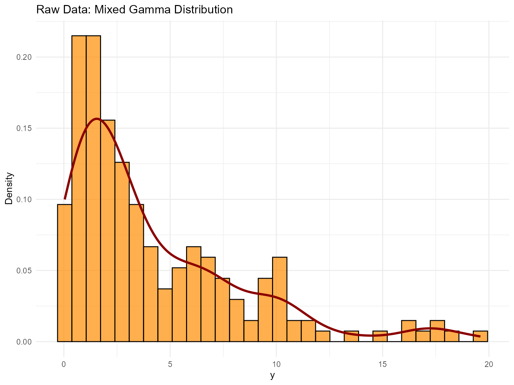

7. Unconditional DPmix with Stick-Breaking Backend
Source:vignettes/website/workflows/v07-unconditional-DPmix-SB.Rmd
v07-unconditional-DPmix-SB.RmdLegacy vignette (for the website / historical notes). These files may not match the current exported API one-to-one. Last verified: 2026-01-18.
For the up-to-date workflow, see the main package vignettes (Introduction, Model Spec, MCMC Workflow, Unconditional/Conditional/Causal, Backends, S3 Reference).
Unconditional DPmix: Stick-Breaking (SB) Backend
Purpose: Showcase the stick-breaking backend that
uses a fixed number of mixture components (components = J)
and contrast it with the CRP backend from v04. In this
vignette we fit two bulk kernels
(Gamma and Cauchy) on the same dataset
to highlight how heavier tails in the bulk can change the fit even
without a GPD tail.
Data Setup
# Generate a reproducible mock dataset instead of relying on saved cache files.
set.seed(10102)
n <- 200
weights <- c(0.4, 0.35, 0.25)
params <- list(
list(shape = 2.0, rate = 1.5),
list(shape = 4.0, rate = 1.0),
list(shape = 7.0, rate = 0.7)
)
component <- sample(seq_along(weights), size = n, replace = TRUE, prob = weights)
y_mixed <- numeric(n)
for (k in seq_along(params)) {
idx <- which(component == k)
if (length(idx) > 0) {
y_mixed[idx] <- rgamma(length(idx), shape = params[[k]]$shape, rate = params[[k]]$rate)
}
}
df_data <- data.frame(y = y_mixed)
summary_tbl <- tibble(
statistic = c("N", "Mean", "SD", "Min", "Max"),
value = c(length(y_mixed), mean(y_mixed), sd(y_mixed), min(y_mixed), max(y_mixed))
)
p_raw <- ggplot(df_data, aes(x = y)) +
geom_histogram(aes(y = after_stat(density)), bins = 30, fill = "darkorange", alpha = 0.7, color = "black") +
geom_density(color = "darkred", linewidth = 1.2) +
labs(title = "Raw Data: Mixed Gamma Distribution", x = "y", y = "Density") +
theme_minimal()
grid.arrange(p_raw, ncol = 1)
| statistic | value |
|---|---|
| N | 200.00 |
| Mean | 4.21 |
| SD | 4.11 |
| Min | 0.04 |
| Max | 19.60 |
Model Specification & Bundle
We build the stick-breaking mixture explicitly with
components = 5 so that there is room for weight decay while
keeping the MCMC runtime manageable for a vignette. We then refit the
same SB model with a Cauchy kernel for comparison.
# --- Gamma kernel ---
bundle_sb_gamma <- build_nimble_bundle(
y = y_mixed,
kernel = "gamma",
backend = "sb",
components = 5, # fixed truncation level for SB
GPD = FALSE, # bulk-only scenario
mcmc = mcmc
)
# --- Cauchy kernel ---
bundle_sb_cauchy <- build_nimble_bundle(
y = y_mixed,
kernel = "cauchy",
backend = "sb",
components = 5,
GPD = FALSE,
mcmc = mcmc
)Running MCMC & Summary
fit_sb_gamma <- load_or_fit("v07-unconditional-DPmix-SB-fit_sb_gamma", run_mcmc_bundle_manual(bundle_sb_gamma))
fit_sb_cauchy <- load_or_fit("v07-unconditional-DPmix-SB-fit_sb_cauchy", run_mcmc_bundle_manual(bundle_sb_cauchy))
summary(fit_sb_gamma)MixGPD summary | backend: Stick-Breaking Process | kernel: Gamma Distribution | GPD tail: FALSE | epsilon: 0.025
n = 200 | components = 5
Summary
Initial components: 5 | Components after truncation: 1
WAIC: 894.655
lppd: -373.085 | pWAIC: 74.243
Summary table
<table class="table" style="width: auto !important; margin-left: auto; margin-right: auto;">
<thead>
<tr>
<th style="text-align:center;"> parameter </th>
<th style="text-align:center;"> mean </th>
<th style="text-align:center;"> sd </th>
<th style="text-align:center;"> q0.025 </th>
<th style="text-align:center;"> q0.500 </th>
<th style="text-align:center;"> q0.975 </th>
<th style="text-align:center;"> ess </th>
</tr>
</thead>
<tbody>
<tr>
<td style="text-align:center;"> weights[1] </td>
<td style="text-align:center;"> 0.515 </td>
<td style="text-align:center;"> 0.157 </td>
<td style="text-align:center;"> 0.31 </td>
<td style="text-align:center;"> 0.475 </td>
<td style="text-align:center;"> 0.91 </td>
<td style="text-align:center;"> 16.884 </td>
</tr>
<tr>
<td style="text-align:center;"> alpha </td>
<td style="text-align:center;"> 1.486 </td>
<td style="text-align:center;"> 1.044 </td>
<td style="text-align:center;"> 0.237 </td>
<td style="text-align:center;"> 1.229 </td>
<td style="text-align:center;"> 4.066 </td>
<td style="text-align:center;"> 25.619 </td>
</tr>
<tr>
<td style="text-align:center;"> shape[1] </td>
<td style="text-align:center;"> 2.153 </td>
<td style="text-align:center;"> 0.906 </td>
<td style="text-align:center;"> 0.976 </td>
<td style="text-align:center;"> 2.031 </td>
<td style="text-align:center;"> 4.073 </td>
<td style="text-align:center;"> 54.399 </td>
</tr>
<tr>
<td style="text-align:center;"> scale[1] </td>
<td style="text-align:center;"> 0.455 </td>
<td style="text-align:center;"> 0.266 </td>
<td style="text-align:center;"> 0.207 </td>
<td style="text-align:center;"> 0.371 </td>
<td style="text-align:center;"> 1.275 </td>
<td style="text-align:center;"> 44.692 </td>
</tr>
</tbody>
</table>
summary(fit_sb_cauchy)MixGPD summary | backend: Stick-Breaking Process | kernel: Cauchy Distribution | GPD tail: FALSE | epsilon: 0.025
n = 200 | components = 5
Summary
Initial components: 5 | Components after truncation: 3
WAIC: 1010.117
lppd: -330.564 | pWAIC: 174.495
Summary table
<table class="table" style="width: auto !important; margin-left: auto; margin-right: auto;">
<thead>
<tr>
<th style="text-align:center;"> parameter </th>
<th style="text-align:center;"> mean </th>
<th style="text-align:center;"> sd </th>
<th style="text-align:center;"> q0.025 </th>
<th style="text-align:center;"> q0.500 </th>
<th style="text-align:center;"> q0.975 </th>
<th style="text-align:center;"> ess </th>
</tr>
</thead>
<tbody>
<tr>
<td style="text-align:center;"> weights[1] </td>
<td style="text-align:center;"> 0.357 </td>
<td style="text-align:center;"> 0.054 </td>
<td style="text-align:center;"> 0.26 </td>
<td style="text-align:center;"> 0.355 </td>
<td style="text-align:center;"> 0.47 </td>
<td style="text-align:center;"> 130.126 </td>
</tr>
<tr>
<td style="text-align:center;"> weights[2] </td>
<td style="text-align:center;"> 0.265 </td>
<td style="text-align:center;"> 0.04 </td>
<td style="text-align:center;"> 0.19 </td>
<td style="text-align:center;"> 0.265 </td>
<td style="text-align:center;"> 0.34 </td>
<td style="text-align:center;"> 119.492 </td>
</tr>
<tr>
<td style="text-align:center;"> weights[3] </td>
<td style="text-align:center;"> 0.2 </td>
<td style="text-align:center;"> 0.037 </td>
<td style="text-align:center;"> 0.13 </td>
<td style="text-align:center;"> 0.2 </td>
<td style="text-align:center;"> 0.28 </td>
<td style="text-align:center;"> 189.551 </td>
</tr>
<tr>
<td style="text-align:center;"> alpha </td>
<td style="text-align:center;"> 2.17 </td>
<td style="text-align:center;"> 1.139 </td>
<td style="text-align:center;"> 0.574 </td>
<td style="text-align:center;"> 1.993 </td>
<td style="text-align:center;"> 4.716 </td>
<td style="text-align:center;"> 250.571 </td>
</tr>
<tr>
<td style="text-align:center;"> location[1] </td>
<td style="text-align:center;"> 2.01 </td>
<td style="text-align:center;"> 1.605 </td>
<td style="text-align:center;"> 0.76 </td>
<td style="text-align:center;"> 1.266 </td>
<td style="text-align:center;"> 7.086 </td>
<td style="text-align:center;"> 51.249 </td>
</tr>
<tr>
<td style="text-align:center;"> location[2] </td>
<td style="text-align:center;"> 3.261 </td>
<td style="text-align:center;"> 2.379 </td>
<td style="text-align:center;"> 0.636 </td>
<td style="text-align:center;"> 2.551 </td>
<td style="text-align:center;"> 8.197 </td>
<td style="text-align:center;"> 249.563 </td>
</tr>
<tr>
<td style="text-align:center;"> location[3] </td>
<td style="text-align:center;"> 4.988 </td>
<td style="text-align:center;"> 2.762 </td>
<td style="text-align:center;"> 0.616 </td>
<td style="text-align:center;"> 5.911 </td>
<td style="text-align:center;"> 9.798 </td>
<td style="text-align:center;"> 151.879 </td>
</tr>
<tr>
<td style="text-align:center;"> scale[1] </td>
<td style="text-align:center;"> 0.711 </td>
<td style="text-align:center;"> 0.418 </td>
<td style="text-align:center;"> 0.341 </td>
<td style="text-align:center;"> 0.584 </td>
<td style="text-align:center;"> 2.089 </td>
<td style="text-align:center;"> 81.904 </td>
</tr>
<tr>
<td style="text-align:center;"> scale[2] </td>
<td style="text-align:center;"> 0.894 </td>
<td style="text-align:center;"> 0.581 </td>
<td style="text-align:center;"> 0.286 </td>
<td style="text-align:center;"> 0.667 </td>
<td style="text-align:center;"> 2.3 </td>
<td style="text-align:center;"> 216.249 </td>
</tr>
<tr>
<td style="text-align:center;"> scale[3] </td>
<td style="text-align:center;"> 1.082 </td>
<td style="text-align:center;"> 0.593 </td>
<td style="text-align:center;"> 0.264 </td>
<td style="text-align:center;"> 1.038 </td>
<td style="text-align:center;"> 2.359 </td>
<td style="text-align:center;"> 302.185 </td>
</tr>
</tbody>
</table>
params_gamma <- params(fit_sb_gamma)
params_gammaPosterior mean parameters
$alpha
[1] "1.486"
$w
[1] "0.515"
$shape
[1] "2.153"
$scale
[1] "0.455"MCMC Diagnostics (S3 Plot Methods)
# Default diagnostics for each fit
if (interactive()) plot(fit_sb_gamma, family = c("traceplot", "autocorrelation", "running"))
if (interactive()) plot(fit_sb_cauchy, family = c("density", "geweke", "caterpillar"))Use summary(fit_sb_gamma) and
summary(fit_sb_cauchy) to inspect effective sample size,
R-hat, and other convergence diagnostics; the
if (interactive()) plot() calls above show the
trace/density pairs for both global and stick-breaking weight
parameters.
Stick-Breaking Weights & Component Activity
The stick-breaking weights are exposed via the
if (interactive()) plot() diagnostics above, and you can
refer to the raw fit_sb_gamma / fit_sb_cauchy
objects (or their summary() output) for posterior summaries
of each component weight.
Posterior Predictions
y_grid <- seq(min(y_mixed), max(y_mixed) * 1.3, length.out = 250)
pred_density_gamma <- predict(fit_sb_gamma, y = y_grid, type = "density")
pred_density_cauchy <- predict(fit_sb_cauchy, y = y_grid, type = "density")
if (interactive()) plot(pred_density_gamma)
if (interactive()) plot(pred_density_cauchy)
quant_probs <- c(0.05, 0.25, 0.5, 0.75, 0.95)
pred_q_gamma <- predict(fit_sb_gamma, type = "quantile", index = quant_probs, interval = "credible")
pred_q_cauchy <- predict(fit_sb_cauchy, type = "quantile", index = quant_probs, interval = "credible")
if (interactive()) plot(pred_q_gamma)
if (interactive()) plot(pred_q_cauchy)
pred_mean_gamma <- predict(fit_sb_gamma, type = "mean")
pred_mean_cauchy <- predict(fit_sb_cauchy, type = "mean")
if (interactive()) plot(pred_mean_gamma)
if (interactive()) plot(pred_mean_cauchy)Bulk-only vs CRP Backends
bundle_crp_small <- build_nimble_bundle(
y = y_mixed,
kernel = "gamma",
backend = "crp",
components = 5,
GPD = FALSE,
mcmc = mcmc
)
fit_crp_small <- load_or_fit("v07-unconditional-DPmix-SB-fit_crp_small", run_mcmc_bundle_manual(bundle_crp_small))
crp_quant <- predict(fit_crp_small, type = "quantile", index = quant_probs, interval = "credible")
sb_quant <- predict(fit_sb_gamma, type = "quantile", index = quant_probs, interval = "credible")
bind_rows(
crp_quant$fit %>% mutate(model = "CRP"),
sb_quant$fit %>% mutate(model = "SB")
) %>%
select(any_of(c("model", "index", "estimate", "lower", "upper"))) %>%
mutate(across(where(is.numeric), ~ round(.x, 3))) %>%
kable(caption = "Quantile Comparison: CRP vs SB", align = "c") %>%
kable_styling(bootstrap_options = c("striped", "hover"), full_width = FALSE, position = "center")| model | index | estimate | lower | upper |
|---|---|---|---|---|
| CRP | 0.05 | 0.110 | 0.009 | 0.639 |
| CRP | 0.25 | 0.296 | 0.054 | 1.374 |
| CRP | 0.50 | 0.531 | 0.136 | 2.134 |
| CRP | 0.75 | 0.877 | 0.273 | 3.364 |
| CRP | 0.95 | 1.602 | 0.603 | 5.913 |
| SB | 0.05 | 0.231 | 0.011 | 0.848 |
| SB | 0.25 | 0.533 | 0.062 | 1.687 |
| SB | 0.50 | 0.876 | 0.149 | 2.662 |
| SB | 0.75 | 1.354 | 0.298 | 3.985 |
| SB | 0.95 | 2.312 | 0.646 | 6.483 |
if (interactive()) plot(crp_quant)
if (interactive()) plot(sb_quant)For unconditional models, use predict() only;
fitted() and residuals() are not
supported.
Takeaways
-
SB Backend: Fixed
componentskeeps label-switching manageable, and the diagnostic plots via the S3if (interactive()) plot()method show weight dynamics. - Kernels matter: Gamma vs Cauchy can behave very differently in the shoulders/tails, even without a GPD tail.
-
Predictions: Posterior density, posterior-mean
quantiles, and mean (via predictive sampling) are accessible via
predict()with pointwise 95% credible intervals. -
Backend comparison: The CRP fit (
v04) and the SB-gamma fit deliver similar central quantiles while SB offers more control over truncation. -
Next: Explore tail augmentation
(
GPD = TRUE) with the CRP backend inv06or SB backend inv07.